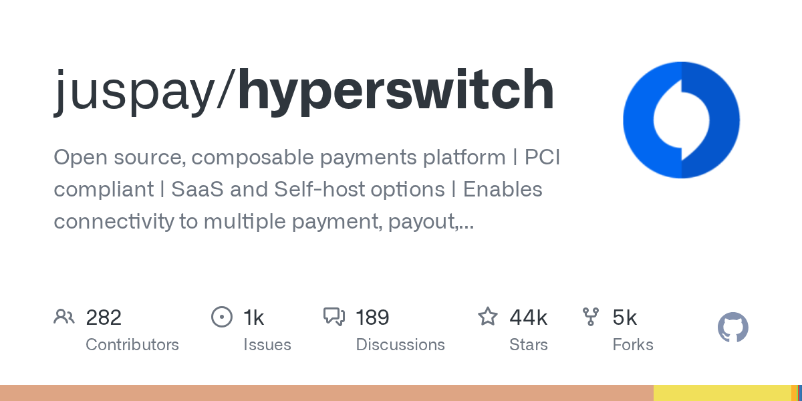

04 GitHub 최근 활동 09.06
juspay/hyperswitch
여러 결제사를 묶는 오픈소스 결제 플랫폼
★ 43,586RustApache-2.0 사내 사용 가능릴리스 v1.126.0 (08.24)테스트 없음예제 없음AGENTS.md 없음

이 저장소는 결제 인프라를 통째로 교체하기보다 필요한 부분만 골라 붙이게 설계됐다. 결제 라우팅, 재시도, 민감정보 저장, 비용 관찰, 정산 자동화가 핵심 모듈이다. SaaS와 자가 호스팅을 모두 언급했고, 로컬 Docker 실행부터 클라우드 Helm 배포까지 경로를 제시한다. 비개발자에게는 결제 운영 화면과 규칙 엔진을 같이 제공하는 백엔드 플랫폼으로 보면 된다.
무엇을 하는 물건인가
이 저장소는 여러 결제 사업자를 한 플랫폼에서 연결하고 운영하는 결제 인프라다. 결제 승인, 재시도, 토큰 저장, 비용 점검, 정산 대조 같은 기능을 모듈별로 고를 수 있다. 기존 결제 체계를 모두 버리지 않아도 필요한 모듈만 얹을 수 있다. 여러 택배사를 한 배송 관리 화면에서 고르는 시스템과 비슷하다.
스펙과 도입 조건
- 언어는 Rust다.
- 설치 형태는 Docker 로컬 실행, 호스팅된 샌드박스, AWS·GCP·Azure용 Helm 배포를 지원한다.
- 로컬 설정 스크립트는 Docker나 Podman을 감지한다.
- 최소 구성부터 모니터링과 스케줄러를 포함한 전체 구성까지 배포 프로필을 고를 수 있다.
- 결제 테스트를 하려면 결제 커넥터 설정이 필요하다.
- 라이선스는 Apache-2.0이다.
- 최신 릴리스는 v1.126.0이며 2026-08-24에 공개됐다.
대안 대비 차별점
이 저장소의 차별점은 결제 스택을 모듈 단위로 쪼갠 점이다. 라우팅만 쓰거나, Vault만 쓰거나, 비용 관찰만 따로 얹는 구성이 가능하다고 설명한다. 기존 Vault를 유지한 채 VGS나 TokenEx와 연결할 수 있고, 저장된 카드 정보를 다시 토큰화하지 않아도 된다고 적었다. 한 번에 결제 게이트웨이를 바꾸기보다 필요한 기능부터 하나씩 붙이기 좋게 설계했다.
생태계도 코어 서버와 대시보드, 웹 결제 SDK, 모바일 SDK, 배포 도구로 분리돼 있다. 이 저장소는 그중 Rust 앱 서버가 중심이다. 더 가벼운 connector 라이브러리인 hyperswitch-prism과, 독립 실행 가능한 decision-engine도 따로 둔다. 전체 스위치를 올리지 않고도 일부 기능만 검토할 수 있는 여지가 있다.
| 모듈 | 역할 |
|---|---|
| Cost Observability | 결제 비용 점검, 숨은 수수료와 패널티 탐지 |
| Revenue Recovery | 카드 BIN, 지역, 결제수단별 재시도 전략 |
| Vault | 카드, 토큰, 지갑, 은행 자격정보 저장 |
| Intelligent Routing | 여러 PSP 중 승인율이 높을 경로 선택 |
| Reconciliation | 2자 대조, 3자 대조, 과거일자 지원 |
| Alternate Payment Methods | PayPal, Apple Pay, Google Pay, BNPL 등 지원 |
이럴 때 쓰면 좋다
- 한 카드사나 한 PSP 의존도를 낮추고 승인 실패 시 다른 경로로 우회하고 싶은 결제 운영 조직에 맞는다.
- 정산 대조를 수작업으로 처리해 마감 시간이 길어지는 금융 서비스 운영팀이 자동화 실험을 할 때 유용하다.
- 카드정보 저장소와 결제 라우팅 규칙을 분리해 운영하고 싶은 전자금융 서비스 개발팀이 검토할 만하다.
핵심 기능
- 100개 이상 결제 처리 사업자와 연결한다.
- 거래별로 승인율이 높을 것으로 예측한 사업자에 라우팅하는 지능형 경로 선택을 제공한다.
- 2자 대조와 3자 대조를 포함한 정산 자동화, 비용 관찰, 재시도 정책, 결제수단 보관 기능을 제공한다.
사내 도입 체크
- 외부 결제 사업자와 직접 연결하는 구조라 거래 데이터와 민감정보 흐름을 세밀하게 검토해야 한다.
- PCI 준수 Vault를 내세우지만, 실제 사내 준수 범위와 책임 분담은 별도 확인이 필요하다.
- 유지보수 주체는 Juspay 조직이다. 400개 이상 기업의 결제 인프라를 운영한다고 소개했다.
- 다중 결제 라우팅, 정산 자동화, Vault는 각각 상용 결제 오케스트레이션 제품으로도 대체 가능하다.
주요 용어
원문 정보
제목: juspay/hyperswitch
최근 활동: 2026.09.06